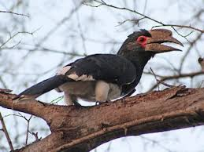

The trumpeter hornbill is a medium sized brid with white and black feathers on their backs and bellys with white tips on their wings and tail feathers the beak on the trumpeter hornbill is quite large and is normally larger on the males the males have a purple and red color around its eyes and the females beak is yellowish at the base.
